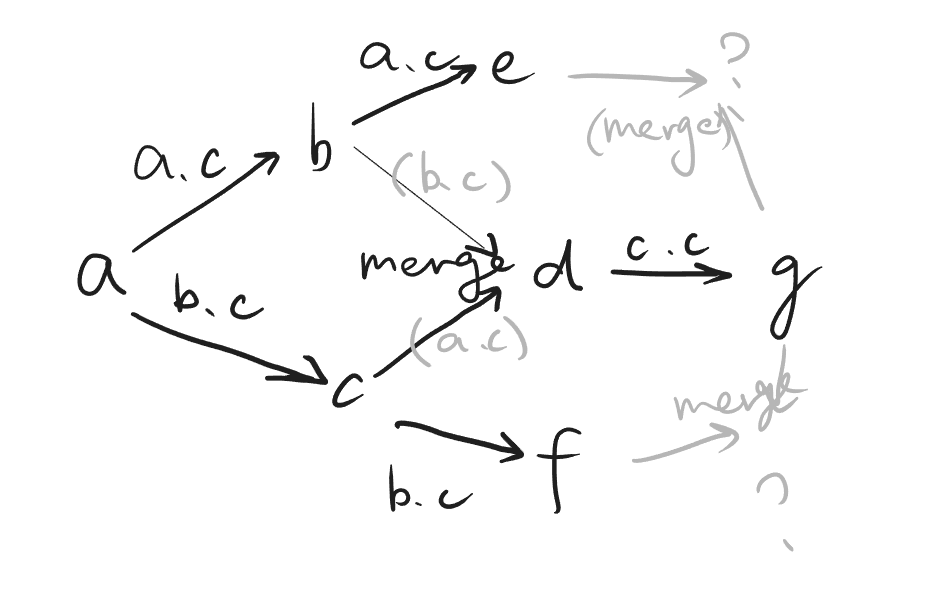

Gitm
条评论git 是当今世界上最流行的版本控制系统。本实验要求你通过提交 git repo 的方式来提交一个迷你版的命令行工具 gitm(inus)。
注意：本实验将只能在 Linux 操作系统中完成，因为你不得不使用系统调用，而 OJ 是 Linux 的。提交 Windows 上可以编译运行的代码，在评测机上注定不可兼容
首先，你需要学习 git ，否则你将完全不明白 gitm 的功能，并且也无法用 git 来管理本次作业的代码。
是的！我们将会发布一个由 git 管理的框架代码，并且要求你一直使用 git 来管理，最终提交一个 git repo。
获取框架代码：
1 | git clone https://git.nju.edu.cn/Tilnel/gitm.git |
提交要求
所有代码，包括 .c 和 .h 文件需要放在 git repo 的根目录下。对自己使用的头文件的引用请以双引号的形式，以便编译脚本能够正常工作。
例如：
1 | gitm |
你可以修改 Makefile，但请不要删除其中的 git 目标依赖。我们在 Makefile 中确保了你的每一次编译运行都能够自动进行 git commit。这些自动的 commit 可以帮助你回滚到自己想要的任意版本，并且在未来查重工作中产生疑问时，良好的 commit 记录将成为重要的证明。
在你的 git repo 里请包含所有编译所需的源文件，但不要出现编译不需要的多余的源文件。
尝试编译：
1 | make |
你将看到根目录下产生了一个名为 gitm 的可执行文件。
1 | ./gitm version |
你将看到一个小彩蛋（你之后可以自由地删掉它或修改掉，不影响成绩）。
注意：本次实验你编写的是一个 “命令行工具”。也就是说，我们将以和使用 git 相同的方式来使用它：在命令行里输入命令和参数。这意味着，这次你需要真正 “解析参数” （被 parse.c 支配的恐惧）。
而且，这次我们将会在运行中多次调用你的程序。也就是说，你的程序并不是在一直运行着，每一次调用都会做不同的事。你存储在内存里的数据都将随着功能完成，进程结束而消失。所以，关于 gitm repository 的有用的信息，你需要将它们持久化到磁盘上，以便进行后续的操作。因此学习 C 语言的文件操作是必不可少的。
为了实现一个 git，首先你要了解 git 的功能
需要实现的功能
假设我们当前在一个文件夹 dir 下
1 | gitm init |
初始化当前的 dir 为一个 gitm repository。如果当前 dir 已经是一个 gitm repo，则不做任何操作。
此时的 gitm 中应当不存在任何 commit，gitm 的仓库中应不存在任何文件。
具体来说，你可以在当前目录下创建一个 .gitm 目录，用于存放一些记录仓库状态的文件。
对，就像 git 那样！
1 | gitm commit |
将当前仓库中文件改动后状态作为一个提交，并记录下来。然后不重复地给出一个长度为 8 的小写十六进制数（例如 3bdc8902），用于唯一地指示这一次 commit。
git 中的提交是一个树形的结构。我们希望你在 gitm 中，同样实现这样的树形结构。

gitm 中不要求实现对分支的命名
1 | gitm checkout commit |
checkout 用于将当前目录的状态切换到 commit 所指示的提交上。
若当前目录的状态较 gitm 当前所处的 commit 有改动，则拒绝本次 checkout，并且你的 main() 函数以返回值 1 退出。
checkout 正常完成后，你目录中文件的状态（除了 .gitm 目录以外）必须与指定的 commit 相同。
1 | gitm checkout . |
特殊地，这一条命令用于将目录文件恢复到当前所处的 commit 时的状态。也就是说，放弃此时对文件的所有改动。
1 | gitm merge commit |
找到当前所处 commit 与命令指定的 commit 的公共祖先，并将两个 commit 合并起来。
具体来说，是将命令指定的 commit 相对于公共祖先的修改，应用于当前所处的 commit。
如果合并的两个 commit 相对于公共祖先，均对同一个文件产生了修改（创建、删除、编辑），那么命令直接拒绝执行，输出 “conflict\n” 并使 main 函数返回 1。
在其他情况下，你需要合并，并产生一个新的 commit。逻辑上，这个 commit 将成为被合并的两个 commit 的共同后继。
我们如何检测这一点？
假设有 commit a-g，b, c 由 a 分支而来，d 由 b, c 合并而来，e 是 b 的后继，f 是 c 的后继，g 是 d 的后继。
你的程序应当有能力找到 e, g 的公共祖先是 b，f, g 公共祖先是 c，在此基础上合并是无冲突的。如果你只能找到 a，则合并有可能产生冲突，因为 e 相对 a 改变了 a.c，而 g 相对 a 也改变了 a.c。

测试脚本
我们会将你的 repo 里所有的 C 源文件和头文件收集起来进行编译，并生成一个名为 gitm 的可执行文件。然后原地创建一个文件夹，作为你的 gitm 需要管理的 repository。例如（其中 > 开头的行表示命令行输出）：
1 | mkdir dir |
随着时间的流逝，我将会发布进一步的实验指南。
实现要求
- 你创建的所有文件都要放到运行目录的 .gitm 目录下。
- 注意目录不要膨胀得过大。把每一个 commit 都完整地保存下来是一个方法，但 OJ 会给你扣分的
- commit 数量不会超过 10000 个。
- 你的 gitm 只需要管理文本类型的文件。其他类型的文件不会出现。